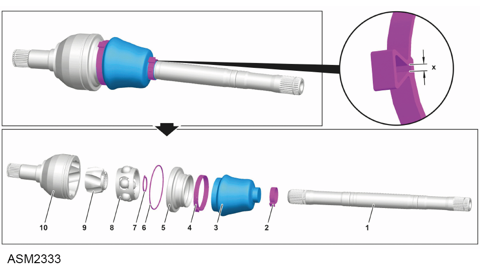

CV Joint Assembly - Inboard Gaiter - Left Side - 4 Cylinder
Print
Operation Code: 47.15.07-02
Removal
- Remove drive shaft assembly - left side. Refer to procedure.

- Using a suitable tool, release clamps (2 and 4) and slide gaiter (3) along driveshaft (1).
 CAUTION: Take care not to damage the gaiter if it is to be reused.
CAUTION: Take care not to damage the gaiter if it is to be reused.
- Release gaiter seal (5) from joint hub (10).
- Match mark joint hub, ball cage (8), constant velocity(CV) joint hub (9) and driveshaft.
- Remove joint hub.
- Remove balls from ball cage.
- Remove CV joint hub from driveshaft using a suitable drift.
NOTE: Remove and discard sealing ring (6).
- Remove ball cage from CV joint hub.
- Remove gaiter seal, gaiter and clamps from driveshaft.
- Remove and discard snap ring (7).
Installation
- Installation is the reverse of removal procedure except for the following:
- Insert balls into ball cage and grease with long-life grease (NLGI grade 2).
- Renew sealing ring of joint hub.
NOTE: Do not apply grease or oil to sealing ring otherwise gaiter seal may turn on joint hub.
- Pack gaiter and joint hub with remaining long-life grease (NLGI grade 2).
- Renew discarded clamps.
NOTE: Dimension "X" must be ≤ 2 mm otherwise leaks may occur at gaiter.
- Renew discarded snap ring.